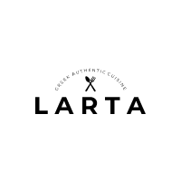
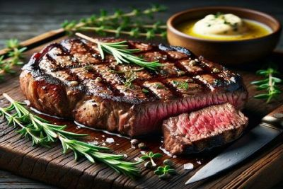
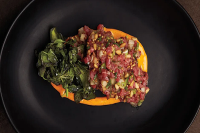
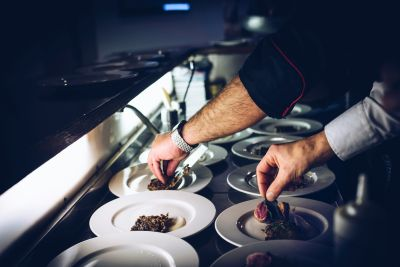
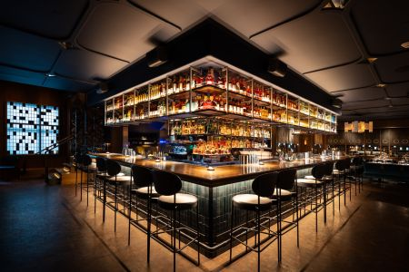

At Larta, our menu features a mouthwatering selection of modern dishes that merge traditional flavors with innovative culinary techniques.
Each item is crafted from the freshest seasonal ingredients, ensuring a delightful dining experience that caters to all tastes.
Whether you're in the mood for hearty entrees, vibrant appetizers, or decadent desserts, our offerings are designed to satisfy and impress.

Our Beef Tagliata is a culinary masterpiece that showcases the rich flavors of perfectly grilled, thinly sliced beef, seasoned with just the right blend of herbs and spices. Served atop a bed of arugula and drizzled with a balsamic reduction, this dish is complemented by shavings of aged Parmesan and a sprinkle of sea salt, creating a harmonious balance of savory and fresh flavors.

Indulge in our restaurant's delicious tartar, made from the freshest, hand-selected cuts of high-quality beef, finely chopped to perfection and expertly seasoned to enhance its natural flavors. Each bite is a symphony of taste, combining the richness of the meat with zesty hints of lemon, the crunch of capers, and the mild bite of finely diced onions, all elevated by a drizzle of high-end olive oil. Served elegantly with house-made crispy crostini and a sprinkle of fresh herbs, our tartar offers a gourmet experience that tantalizes the senses and leaves you craving more.
Our dedicated team at Larta is passionate about food and hospitality.
Our talented chefs bring years of experience and creativity, meticulously preparing each dish to ensure top-notch quality and flavor.
Our friendly and attentive staff is committed to providing exceptional service, making each guest feel valued and welcome from the moment they enter.

Larta boasts a warm and cozy ambiance that invites you to relax and unwind.
The thoughtfully curated decor, soft lighting, and comfortable seating create the perfect setting for any occasion
be it a romantic dinner, a gathering with friends, or a celebratory meal.
Every detail has been designed to create a unique atmosphere that enhances your dining experience.
